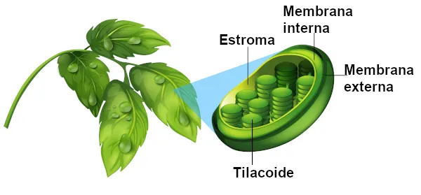

Os cloroplastos são organelas encontradas em células de vegetais e das algas. Elas contêm clorofila, que absorve a energia luminosa para a fotossíntese e dá a cor verde às plantas. Nos vegetais, ocorrem principalmente nas folhas.

Além da fotossíntese, os cloroplastos armazenam amido e sintetizam proteínas, ácidos graxos e metabólitos secundários.